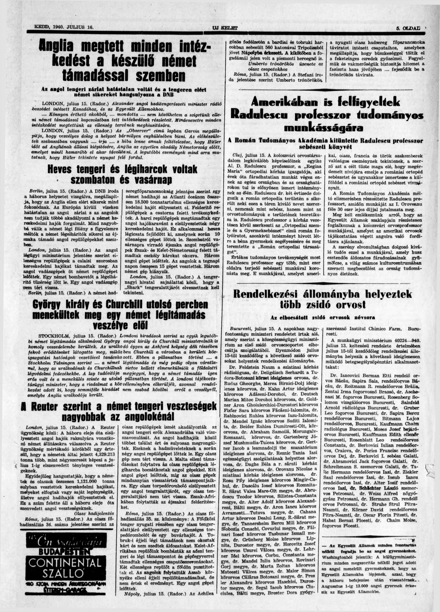
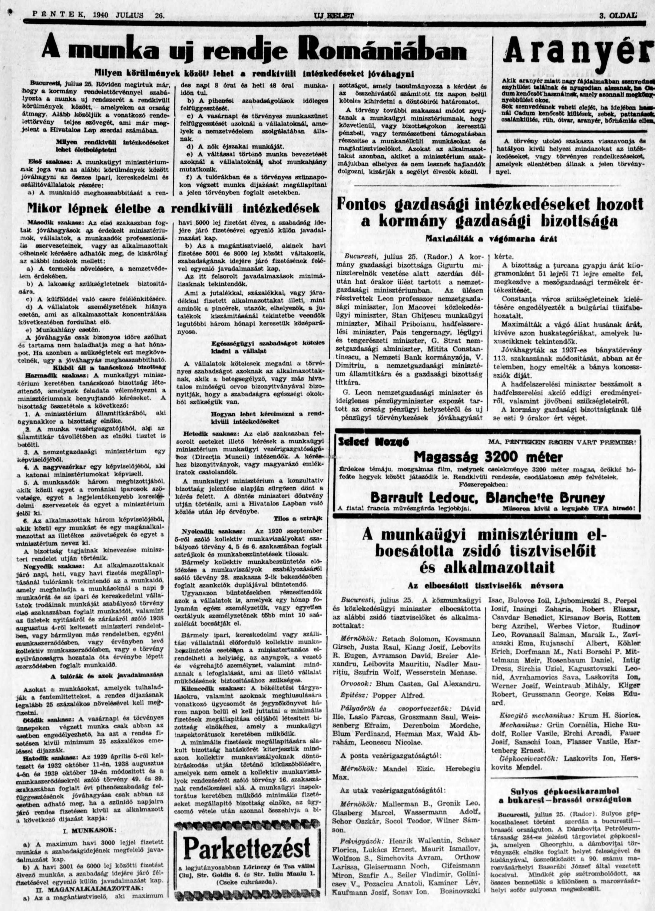
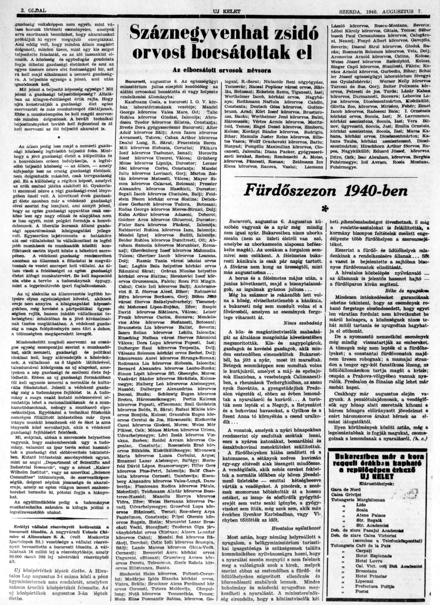

|
• Background • Database • Acknowledgements • Searching the Database |
During World War II, Romanian leader Ion Antonescu applied dramatic policies of "Romanianization" and deprivation of civil rights, including dismissal of Jews from employment. This database of 292 medical professionals and government workers dismissed from their jobs was taken from three newspaper announcements.
Source Documents
Two notices appeared in Új Kelet (a Hungarian language, Jewish, Zionist newspaper published in Cluj-Napoca, Romania) listing Jewish medical professionals who had been dismissed from their jobs by the Ministry of Public Heath under a ministerial decree. Another notice, in the same newspaper, listed government employees who were dismissed by the Ministry of Labor. The lists of dismissed personnel appeared in the following newspaper articles:July 16, 1940, page 5 (medical, Ministry of
Public Health) 
July 26, 1940, page 3 (government employees,
Ministry of Labor) 
August 7, 1940, page 7 (medical, Ministry of
Public Health) 
The two lists of medical personnel overlap with some names in common. This is not necessarily bad because the details are sometimes slightly different, e.g., one doctor was listed as hospital doctor in one list and as hospital radiologist in the other.
The fields for this database are as follows:
The 16-Jul-1940 list usually listed people as "Dr." The 07-Aug-1940 list did not provide title.
Professions are given in Hungarian in the original; I used Google Translate to translate them to English. Individuals' names, towns and counties can be spelled in the Romanian or Hungarian way and some names are written in German, e.g., SCHÄCHTER.
If you have difficulty identifying a town, check the original to see (from the accents) whether it is written in Hungarian or Romanian. Searching with the accents may help you identify the town.
NOTE: Should one choose to look at the original documents, one should be aware that the format is not consistent across the lists. For example, in the July 16 list, town and county are often separated with a dash (-) but sometimes with a comma; the word megye (county) is sometimes supplied but not consistently. In the August 7 list, town and county are separated by a comma. (The July 26 list provides neither town nor county.)
The information contained in this database was indexed from the three newspaper articles described in the Background section above. Dr. John Hoenig, a Professor Emeritus of Marine Science at the Virginia Institute of Marine Science, (College of) William & Mary, compiled the list. We thank Arcanum Database Publisher (Arcanum Adatbázis Kiadó), which has made 60 million pages of newspapers, journals, encyclopedias and other documents available through its website www.arcanum.com, for permission to reproduce the three newspaper articles containing the information in this database.
We’d like to thank Mike Kalt, HTML Volunteer, for placing this description online, and to Nolan Altman, Director of Special Projects and Coordinator of the Holocaust Database, for his continued devotion and dedication to JewishGen's important work.
Nolan Altman
Coordinator-Holocaust Database
July 2022
This database is searchable via JewishGen's Holocaust Database and the JewishGen Romania Database.
{kind=link}
{kind=link}
{kind=link}